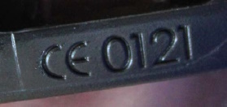

Nach § 2 PSA-Benutzungsverordnung dürfen nur solche persönlichen Schutzausrüstungen (PSA) - und damit auch Gehörschutz - ausgewählt, bereitgestellt und benutzt werden, die den Bedingungen für das Inverkehrbringen von persönlichen Schutzausrüstungen nach der europäischen PSA-Verordnung (EU) 2016/425 entsprechen.
Gehörschützer sind in die Risikokategorie III eingestuft (Schutz gegen Risiken, die zu sehr schwerwiegenden Folgen wie Tod oder irreversiblen Gesundheitsschäden führen können). Zum Konformitätsbewertungsverfahren von Gehörschützern gehören eine EU-Baumusterprüfung und die Sicherstellung der Produktionskontrolle durch eine notifizierte Stelle (Produktionsüberwachung oder Qualitätssicherungssystem für den Produktionsprozess).
| Hinweis |
| EG-Baumusterprüfbescheinigungen nach der Richtlinie 89/686/EWG können bis längstens zum 20.04.2023 gültig sein. |
Unternehmer und Unternehmerinnen haben den Beschäftigten, die in Bereichen einem Tages-Lärmexpositionspegel von über 80 dB(A) oder einem Spitzenschalldruckpegel von über 135 dB(C) ausgesetzt sind, geeigneten Gehörschutz zur Verfügung zu stellen. Dieser muss dem Stand der Technik entsprechen.
Von Bedeutung sind z. B.
Die Herstellfirma erklärt die Übereinstimmung mit den Anforderungen der EU-Verordnung anhand einer EU-Konformitätserklärung und durch die CE-Kennzeichnung auf der PSA. Falls die Kennzeichnung auf dem Produkt nicht möglich ist, wie z. B. bei Gehörschutzstöpseln, kann sie laut PSA-Verordnung (EU) 2016/425 auf der Verpackung oder den der PSA beigefügten Unterlagen angebracht werden. Die CE-Kennzeichnung besteht aus dem Kurzzeichen "CE" (= communauté européenne - Europäische Gemeinschaft) und einer vierstelligen Kennnummer der notifizierten Stelle, die die Konformität mit dem Baumuster überwacht (jährliche Produktionsüberwachung) (siehe Abbildung 1).

Abb. 1 Beispiel für die CE-Kennzeichnung eines Kapselgehörschützers inkl. Kennnummer der überwachenden notifizierten Stelle
Die Herstellfirma hat dafür zu sorgen, dass die EU-Konformitätserklärung für das jeweilige Produkt verfügbar ist. Sie muss entweder dem Produkt beiliegen oder es ist die Internet-Adresse anzugeben, über die die EU-Konformitätserklärung zugänglich ist. Ein Muster findet sich in Anhang 7.
Zur eindeutigen Identifikation muss der Gehörschutz oder (falls die Größe der PSA dies nicht zulässt) die kleinste Verkaufsverpackung entsprechend der Normenreihe DIN EN 352 und PSA-Verordnung (EU) 2016/425 mindestens mit folgenden Angaben deutlich, unauslöschlich und dauerhaft gekennzeichnet sein:
Zur Gewährleistung der sicheren Benutzung muss entsprechend DIN EN 352 und PSA-Verordnung (EU) 2016/425 jedem Produkt (kleinste Verkaufsverpackungseinheit) eine schriftliche Herstellerinformation in deutscher Sprache beigefügt sein.
Die Herstellerinformation enthält u. a. Hinweise auf
Sofern erforderlich, müssen weitergehende Informationen zu den eingesetzten Gehörschützern gegeben werden. Dies betrifft insbesondere
Die Ausgabe von Gehörschutzstöpseln kann über Spender an Zugängen von Lärmbereichen vereinfacht werden. Auf die Ausgabestellen ist hinzuweisen. Neue Gehörschützer wie auch Austauschteile müssen in geeigneter Form jederzeit verfügbar sein.